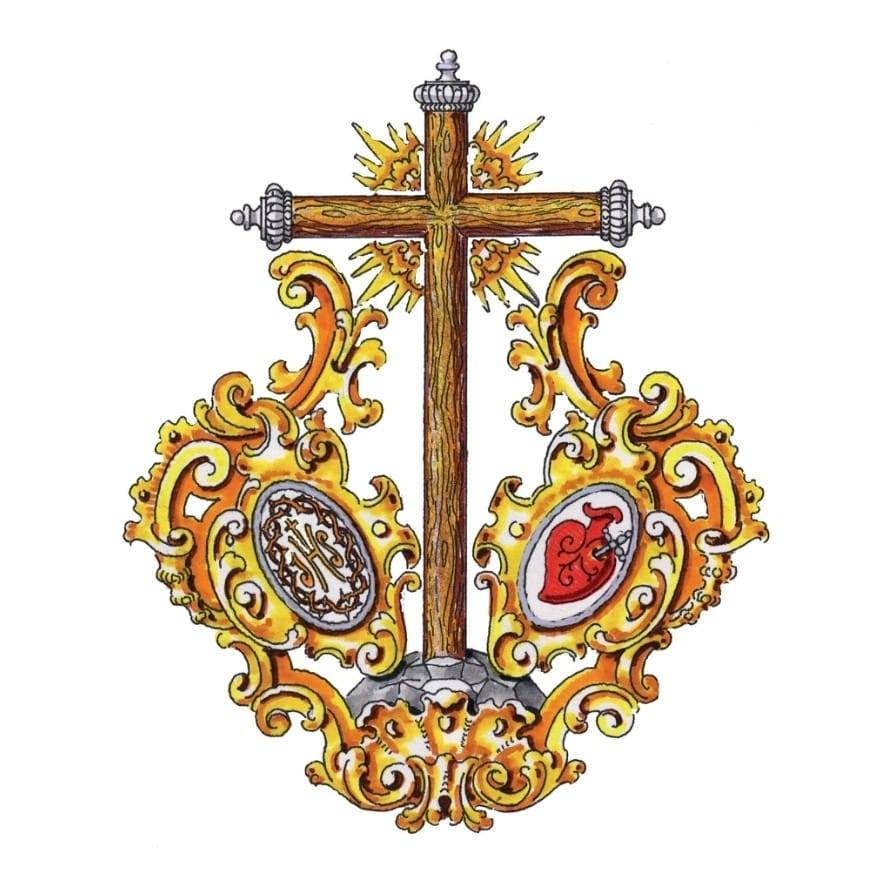
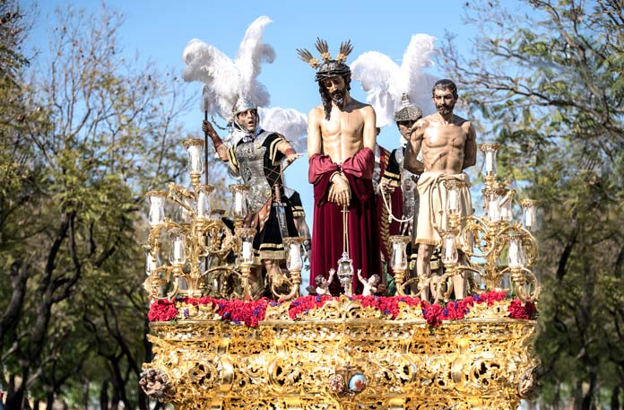

Presentación Al Pueblo
Capilla de la Santa Cruz C/ Gustavo Bacarisas, 10
Hermandad de la Santa Cruz de Nuestro Señor Jesucristo, y Cofradia de nazarenos de Nuestro Padre Jesús en la Presentación al Pueblo, Nuestra Señora del Amor y Sacrificio y San José

Numero de hermanos
1500
Nazarenos
600
Autores
Nuestro Padre Jesús en la Presentación al Pueblo es obra de José Pérez Delgado (1982). Barrabas, Pilatos y el romano del Senatus son de Jose Manuel Miñarro. Romano que custodia a Barrabas (Perez Delgado) Claudia, esclavo y centurión (Manuel Martín Nieto) Nuestra Señora del Amor y Sacrifio es obra anónima (siglo XIX), restaurada por Ortegra Bru (1980) y Fernando Aguado (2025).
Capataces
Jesús García y José A. Sánchez en el Misterio y José Manuel Pedrera en el Palio
Música
B.C.T. Presentación al Pueblo, tras el Misterio y Banda de Música María Santísima de la Victoria "Las Cigarreras" tras el Palio.
RECORRIDO
| Hora Aprox. | Cruz de guía |
|---|---|
| 16:00 | Salida |
| -- | Gustavo Bacarisas |
| -- | Virgilio Mattoni |
| -- | Avenida Joselito el Gallo |
| -- | Juan Belmonte |
| 17:00 | Lagartijo |
| -- | Avenida del Guadalquivir |
| -- | Segura |
| -- | Tajo |
| -- | Cardador |
| 18:00 | Avenida 28 de Febrero |
| 19:00 | Pasarela Cristo de la Presentación |
| -- | Huerta Palacios |
| 19:30 | Capote |
| -- | Manuel Calvo Leal |
| 20:00 | Canónigo |
| 20:30 | Santa María Magdalena |
| -- | Plaza de la Constitución |
| 21:00 | Carrera Oficial |
| -- | Santa Ana |
| 21:30 | Nuestra Señora del Carmen |
| 22:00 | Pasarela Cristo de la Presentación |
| 23:00 | Avenida 28 de Febrero |
| -- | García Ramos |
| -- | Plaza Amor y Sacrificio |
| -- | Gustavo Bacarisas |
| 00:00 | Entrada |